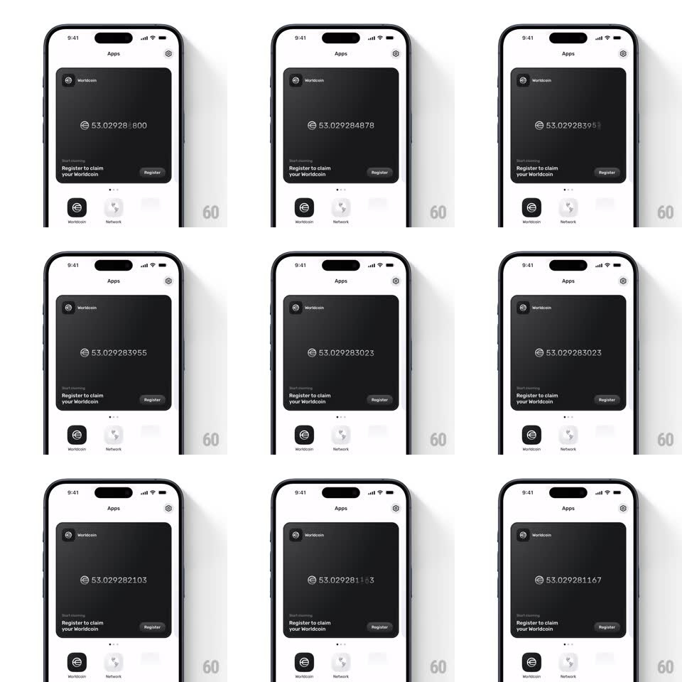

Media
Frame-by-frame

Rebuild this interaction 1:1: World App's live balance ticker - the Worldcoin card balance (53.029285800) updates in real time with digit-by-digit vertical flips, each changed digit rolling while stable digits stay pinned.

Rebuild this interaction 1:1: World App's live balance ticker - the Worldcoin card balance (53.029285800) updates in real time with digit-by-digit vertical flips, each changed digit rolling while stable digits stay pinned. ## Integration Integration: stack-agnostic spec - springs given as stiffness/damping, timed motions as duration + curve; map every value to your framework and animation library of choice. ## Scene The "Apps" page: a dark Worldcoin card (logo + "Worldcoin" header) carrying a large light balance readout "53.029285800" with the currency glyph; below it "Register to claim your Worldcoin" and a Register button; app icons (Worldcoin, Network) sit under the card. ## Motion spec Pattern: per-digit vertical ticker. - The balance updates roughly every second; on each tick, only the digits whose value changed roll - each is its own wheel: the old digit slides up (or down, matching the delta direction) and the new digit enters from the opposite edge (220ms, ease-out, per-digit 20ms stagger from least-significant). - Leading digits almost never move - they stay rock still, anchoring the number. - The currency glyph and decimal point are static chrome; the wheels sit between them. - If many digits change at once, the stagger sweeps right-to-left so the eye reads the cascade. - The readout's tabular figures keep total width constant - no layout jitter. ## Calibration - Per-digit roll, never whole-number crossfade - the unchanged digits must not flicker. - Keep the cadence tied to the real update stream; never animate faster than data arrives. ## Reduced motion Digits swap with a 150ms fade, whole readout at once. ## Don't miss - The stagger direction is right-to-left (least significant first) - matching how the change propagates. - The number uses tabular/monospaced figures so rolling digits align perfectly.